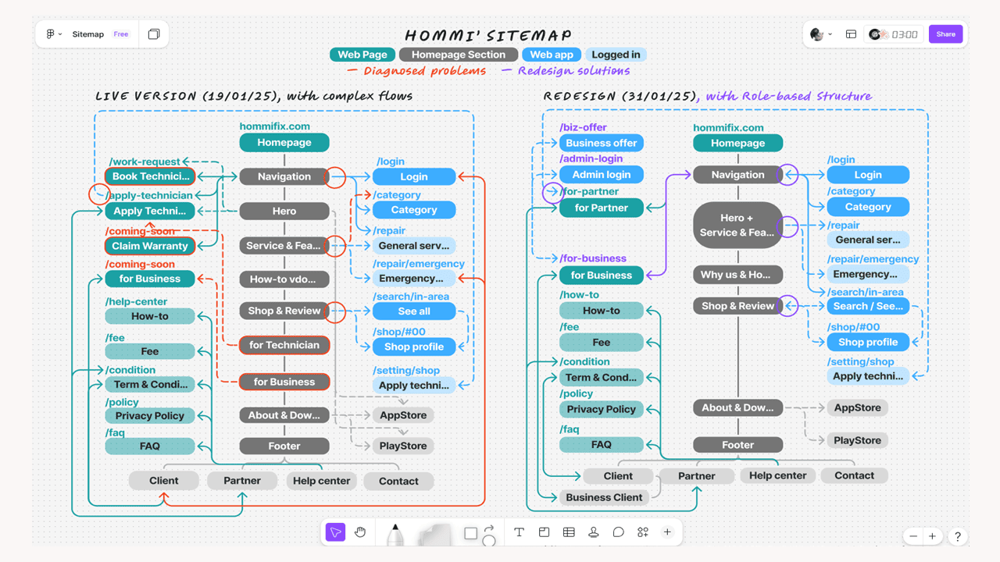

• From a page to full site — Hommi was an early-stage home services marketplace. We transformed a marketing landing page into the full product website by integrating with core platform and scaling with additional pages.
• Looks good, but feels off — Despite its aesthetic appeal, the overall website's UX was suboptimal. I experienced complex and inconsistent user flows while building a help center.
• Product design lifecycle — To improve the live website's IA & UX/UI, I proactively proceeded as follow:
Mapped the whole site across 10+ pages — spotting redundant paths, missing pages, overlapping content, and dead ends.
Identified an absence of role-based structure as the root cause — client, partner, and business flows were tangled into an unorganized site.
Restructured the site around the 3 roles and resolved all issues — removing paths, designing a new page, rearranging content, and adding return buttons.
Built a full UX/UI prototype in Figma — validating that each role has clear, complete journeys with hierarchical content.
• A self-made blueprint — This self-driven project served as the single source of truth for all stakeholders, unified by a role-based structural sitemap and a completed design prototype.

Full interactive UX/UI prototype.